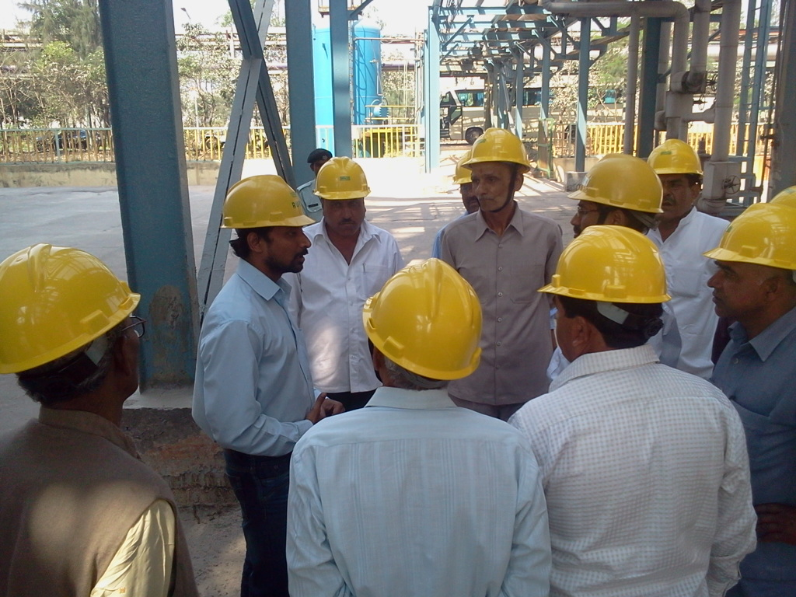
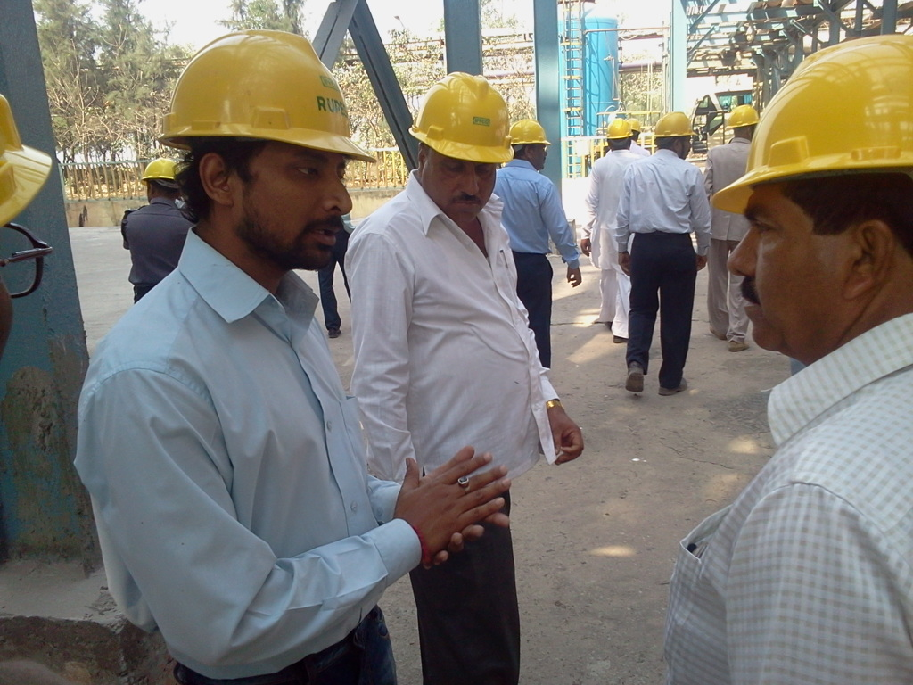
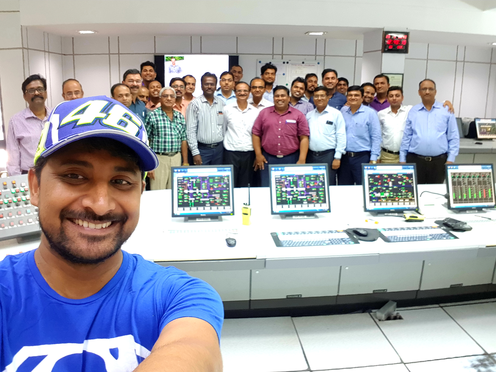

On the day of the counseling for entry to the engineering course, as per my father’s verdict, I choose the chemical engineering course. I was completely dependent on my father’s decisions. He is a vivid reader, ornithologist, nature lover, and an ex-scientist of ICMR (Indian Council of Medical Research), Govt. of India. I love my father. I truly believe Chemical Engineers make transformed our modern world by any means.




